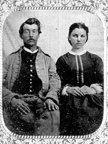

|

NAME: James Sturdevant
BORN: 1838
DIED: 1923
ALLEGIANCE: Union
HIGHEST RANK: Sergeant
UNIT: 8th Iowa Infantry, Company F
RECORD: Enlisted in 8th Iowa on August 10, 1861.
Mustered in September 21 at Davenport, Iowa. Captured at the
Battle of Shiloh, Tennessee, on April 6, 1862. Paroled on
October 17. Rejoined 8th Iowa in January 1863. Served in the
assault on Vicksburg, Mississippi, on May 22; at the capture
of Jackson, Mississippi, on July 16; and at the Battle of
Brandon, Mississippi, on July 19. Transferred to 1st
Battalion, Invalid Corps, Company 158 (later Company H, 21st
Regiment, Veteran Reserve Corps). Mustered out September 21,
1864, at Pittsburgh, Pennsylvania.
|
|
The day was April 6, 1862, and the 8th Iowa Volunteer
Infantry was in serious trouble. The Confederate Army of the
Mississippi was on the verge of driving Major General
Ulysses S. Grant's Union army into the Tennessee River at
Pittsburg Landing, Tennessee. The only thing keeping the
Rebels from accomplishing their goal was a compact cluster
of Union infantry and artillery that was sending out such
swarms of bullets and shells that the Confederates
respectfully dubbed it the "Hornets' Nest." From its
position in the "Hornets' Nest," the 8th Iowa helped push
back one Confederate assault after another, its men fully
aware that their efforts could make the difference between
the defeat or survival of their army.
With the 8th Iowa at Pittsburg Landing that day was
Sergeant James Sturdevant, an Ohioborn farmer who had
enlisted in the regiment's Company F in August 1861. When
the Rebels finally outflanked and surrounded the "Hornets'
Nest" around 6:00 a.m., he was one of 379 men of his
regiment who were captured.
Sturdevant and his fellow prisoners were held at various
locations in the South. While at Macon, Georgia, Sturdevant
developed chronic diarrhea from exposure and indigestible
food. This condition would plague him for the rest of his
life. Paroled at Aiken's Landing, Virginia, on October
17, 1862, Sturdevant headed home to Iowa. There, he lived
out his parole period with the vigor of a man who had been
given a fresh chance at life. On Christmas Eve, he married
lovely Susan Walter, with whom he sat for this photograph.
It must have been difficult to leave home again, but in
January 1863 Sturdevant rejoined the 8th Iowa. That year, he
participated in Ulysses S. Grant's Vicksburg Campaign. By
the year's end, however, his chronic illness prevented him
from remaining in the field. Transferred to the Invalid
Corps, he was honorably discharged on September 21, 1864, at
Pittsburgh, Pennsylvania, three years to the day after
mustering in.
With the money he had earned in the army, Sturdevant
bought a farm in Keokok County, Iowa. He died on October
30, 1923, survived by his wife, two daughters, 13
grandchildren, and countless great-grandchildren.
Source: Civil War Times Illustrated
36:1 (March 1997), 80.
|